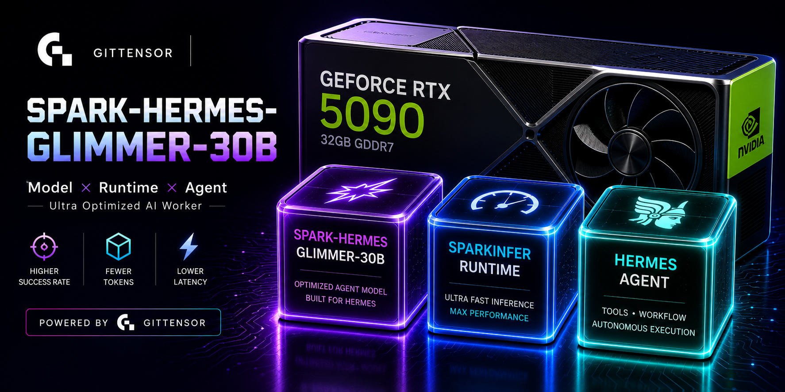

Spark-Hermes
One pinned model. An open competition on how it is used. Every result
checkable by a stranger.
SN74 Gittensor · Spark-Hermes-Glimmer-30B
What is being competed on
Every miner runs the same weights, at the same revision, through the same
harness. What differs is a small prose surface — an operating identity and a few skills — and the
competition is whether that surface makes the model solve tasks it otherwise fails.
Nothing is self-reported. The validator executes the submitted surface itself, against a
published challenge, and grades it with a check nobody could read beforehand.
Same model. Better rollout. Verified improvement. Better next model.
Measured, 2026-08-11
The pinned model on the 19-task suite, bf16 on an RTX PRO 6000 Blackwell, served
through SGLang. These are results, not targets.
73.7%
suite success
14 of 19 tasks, one attempt each.
0
malformed turns
Across 1.69 M tokens and ~300 tool calls. The model and the parser agree completely on
the wire format.
19 / 19
withheld checks live
Every task's hidden verifier runs, and every one is proven able to pass a reference
solution — not merely to fail an unsolved workspace.
0
overfit episodes
None passed the published check while failing the withheld one.
The loop, run end to end
A full round on real hardware, every stage exercised:
| Stage | What happened |
|---|
| open | challenge published, baseline 0/10 on the task, 12.2% token spread |
| submit | surface uploaded privately; the digest committed publicly |
| freeze | submissions sealed — verdicts cannot exist before this |
| judge | validator ran the surface: 2/10 verified, refused |
| crown | no crown — nothing cleared the bar |
| audit | bundle published and independently verified |
| aggregate | 2 SFT rows, 16 preference pairs |
Two of those are the point. A prose-only surface moved a task the model failed ten times
out of ten — and it was still refused, because the withheld check must pass on
every attempt before efficiency is considered at all. And no crown was awarded, because crowning
the best of a bad field would make an hourly reward that always pays out and therefore says
nothing.
Why you can check it
After a round settles the validator publishes a bundle, and anyone holding the revealed check
can confirm the round was graded against the check committed to before submissions
opened. The audit states its own limit too: it does not prove the episodes came from the pinned
model — that needs the evaluation inside a measured confidential VM, with the claim digest as the
attestation nonce.
Receipts are public and carry envelope facts only — an id, a miner, a digest, a queue status.
Nothing that hints at merit, because during an open round any correctness signal turns the
withheld verifier into a check-your-guess oracle.
The model
| Base | meta-models/Muse-Glimmer-30B @ 97c77dff |
|---|
| Wire format | ATEM — this base does not speak Hermes, so the repository implements its native format |
|---|
| Train & score | bf16 on an RTX PRO 6000 Blackwell, 96 GB |
|---|
| Ship | GGUF, sized for a 32 GB card |
|---|
| Serving | SGLang — vLLM has no native support for this architecture yet |
|---|
A bf16 score is not a claim about the quantized build. The promotion gate refuses to
compare runs whose serving precision differs, so a GGUF release has to be re-measured rather than
inheriting the number above.
Mining
git clone https://github.com/gittensor-model-hub/Spark-Hermes
python -m miner.cli init # a surface: SOUL.md and skills/
python -m miner.cli check # the contract, before you spend a run
python -m miner.cli evaluate # your surface against the baseline
# upload privately, then open a pull request carrying only the digest
The bundle stays private, so your surface remains your edge. The digest is public, timestamped
and attributable, so the validator cannot evaluate a different bundle than the one you committed
to and you cannot revise after the fact. Full guide →